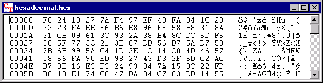

This window type is used to display documents which contain at least one non-displayable special character.
According to the Edit menu, characters can be overwritten, removed or inserted.
The window for hexadecimal input and output is designed as follows:
The first column contains a serial hexadecimal number of the position of the characters displayed in the other two columns.
In the second column the characters are presented in hexadecimal form (see ASCII table). One character is represented by two characters one after the other (0, 1,..., 9, A, B,..., F).
In the third column the displayable characters are shown in accordance with their ASCII code. Non-displayable characters are depicted by a dot.
If the hexadecimal value of a character is changed, the ASCII character displayed is modified and vice versa.
If you highlight hex characters in the middle, the according ASCII characters on the right are highlighted too (and vice versa).

Documents without any special characters are displayed in a window for textual input and output.
It is possible to force the display to take the form of a
window for textual input and output by selecting the menu option
View \ Show as Text.
Note: This results in
loss of all characters behind the first ascii character 'NULL' (this text format character
indicates the end of file) if the text file is stored. This character is shown as 'NUL'.
Remark 1:
The values (decimal and hexadecimal) of the different ASCII characters can
be found in the ASCII table.
Remark 2:
In order to overwrite chracters with Ctrl-V (Paste) you first have to highlight the chracters.